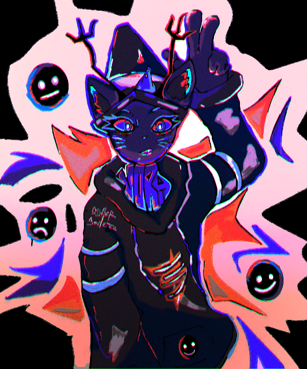
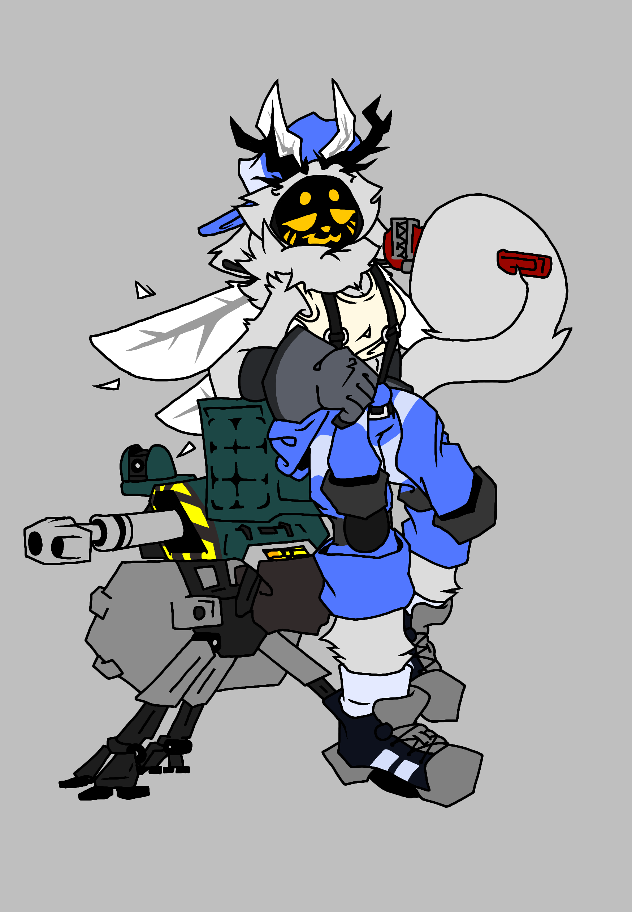
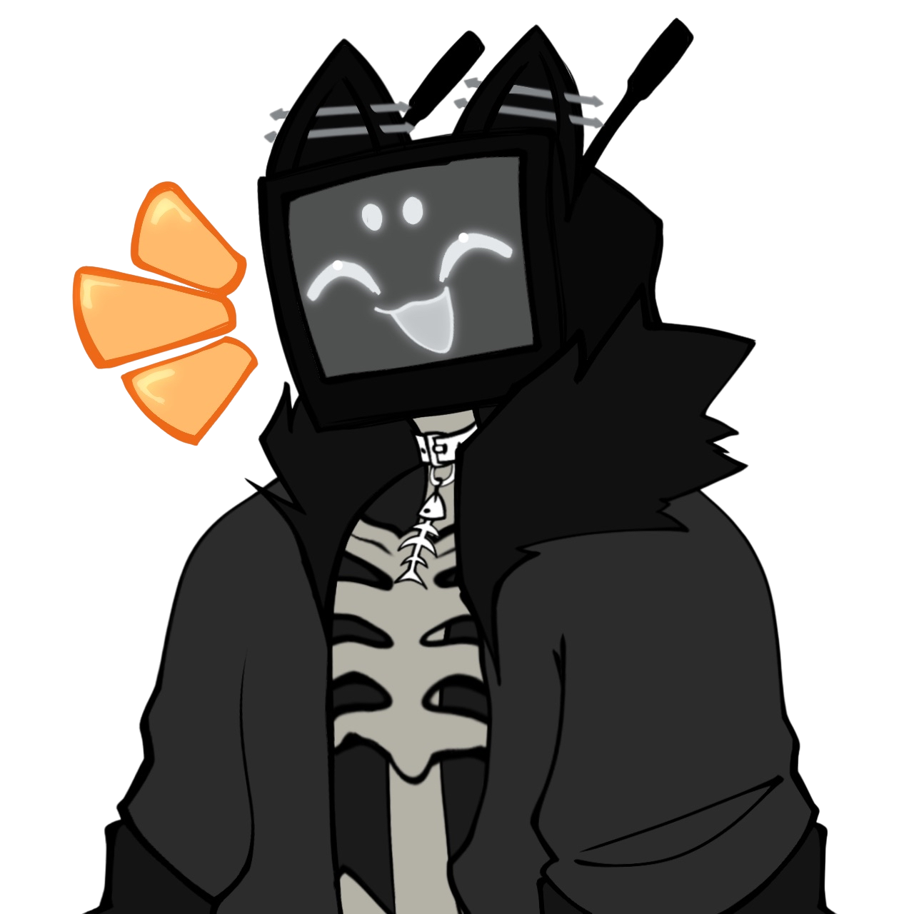
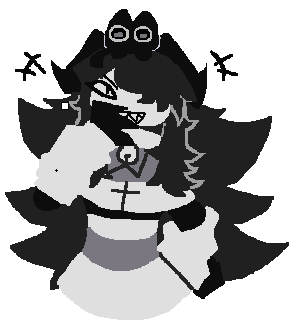
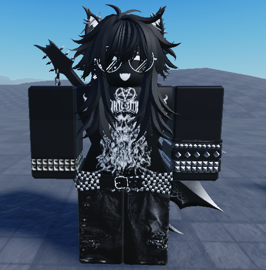
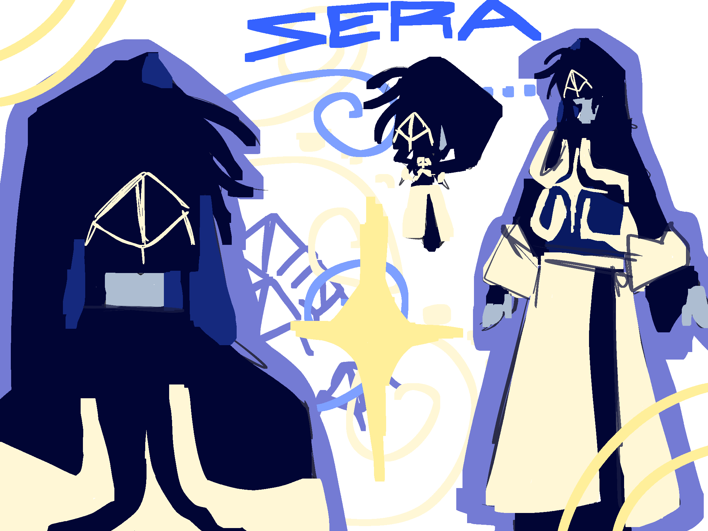

Music: "Hi-Lo" by "Evanesence"
Extras
Infos
I am #transgender and mainly go by She/Her pronouns but I lowkey dont care what you use for me, as long as it isnt He/Him
I like coding and stuff also and I make games, check the roblox group in the extra social links section of that page for more info.
My OCs
Astral

One of my favourite OCs even after a few years since her creation.
She is the OC that I still use somewhat often and a name that I accept being called.
Her origins are basic in that she was an experiment on combining the DNA of multiple species into one,
with her age of being forced into said experiment being when she was only 5 years of age.
Astron

How I made her:
Inverted Astral.
Lythia

Lythia is a skeleton who has a TV for a head.
No I don't know how she can do this, and yes she will continue to do it.
Nina

I had made Nina using a picrew that was in the style of Fundamental Paper Education because I liked the style they had for characters.
She is a student that had become a teacher somehow.
Nyx

I made Nyx cuz I like alternative fashion and I really wanted a roblox avatar/OC that would properly fit under the alternative label.
Yeah.
Sera

Sera is just an OC I created on a whim who I decided to expand the lore of using another character I had created for a discontinued game I had been working on as the basis of said lore.
Ave

Ave is a being of pure light and chooses to appear as a pure white humanoid with some purple highlights.
This OC was made originally as a joke for those "Divine Art" minecraft tiktok trend videos.
Please draw them, I beg </3